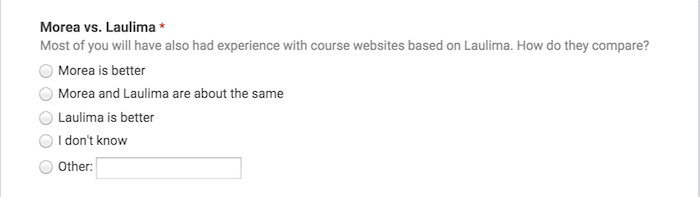
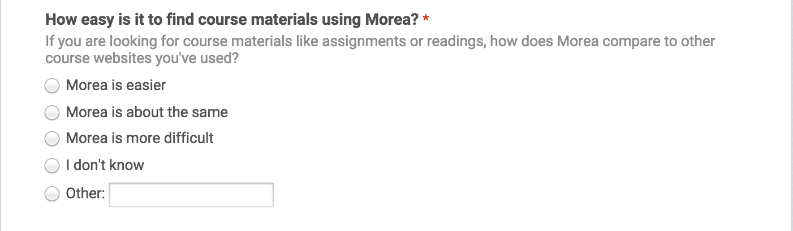
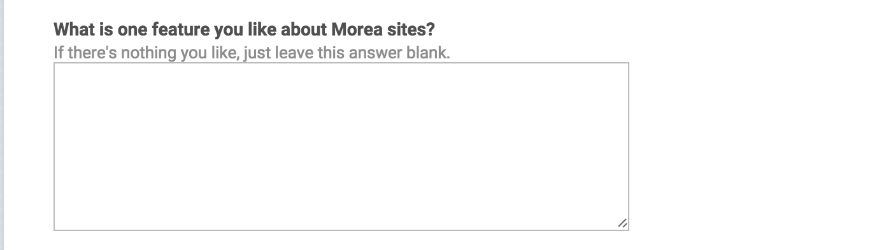
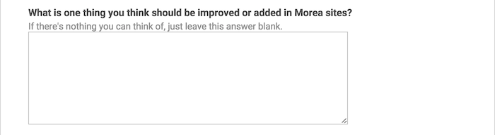

Summary
In May, 2015, the instructors for five courses whose websites were built using the Morea Framework asked their students to fill out an online survey asking their opinion of the course website. Out of the 175 students who received the request, 119 responded, for a participation rate of 68%. One course was 200 level, two were 300 level, one was 400 level, and one was a 600 (graduate) level. Four of the courses were in the Department of Information and Computer Sciences, and one was in the Department of Information and Technology Management. All were at the University of Hawaii.
The goal of the survey was to determine if end-users find that the Morea Framework provides a useful alternative to learning management systems such as Laulima. And if so, what changes or enhancements would end-users find desirable.
Survey results indicate that user satisfaction with the Morea Framework course websites is quite high: 70% of respondents prefer it to Laulima in particular and 63% find it easier to use than other course websites in general. From a user perspective, key features include its organization, layout and navigation, its superiority to Laulima, the schedule facility, and a mobile friendly layout. Most common user improvement requests include improvements to navigation, addition of missing Laulima features, tracking of user state, and schedule improvements.
In conclusion, the evidence from this survey suggests that the Morea Framework does provide a useful approach to course website design and that further development and use is warranted.
The following sections present the survey data in more detail.
Q1: Page evaluation
While instructors are free to customize the top-level page structure of a Morea website, all of the instructors in this survey chose to retain the "standard" five pages (though all did augment them with additional pages). The first question asked users to evaluate the usefulness of the five standard Morea pages:

Here is a summary of the responses:

These results show that most users found all of the standard Morea pages to either useful or extremely useful. The standard pages did differ with respect to the minority opinion: while all of the respondents except one found the Modules page to be at least useful, 9% found the Outcomes page to not be useful.
The free text responses below will provide further insight into the usefulness of the Morea standard pages and how they can be improved.
Q2: Morea vs. Laulima
Laulima is the learning management system provided to all faculty at the University of Hawaii, and so most students in this survey have prior experience using it. Laulima is less "opinionated" than Morea in that it doesn't require instructors to organize their course materials into modules that are themselves organized into outcomes, readings, experiences, and assessments. Laulima also provides functionality not available in Morea, such as automated assignment submission and a gradebook. This question asked users to compare Morea to Laulima:

Here is a summary of the results:

Despite the fact that Laulima was probably more familiar to users, and that it provided more functionality, 70% preferred Morea to Laulima and only 3% preferred Laulima to Morea.
The free text responses below will provide further insight into this response, and suggests that the strong preference for Morea results at least in part from its "opinionated" nature: users like the organization imposed on course materials by Morea.
Q3: Morea vs. others
The next question requested user assessment of how easy Morea is to use relative to any other course website they have have encountered:

Here is a summary of the results:

The preference for Morea dropped a little from Question 2, but still indicates a majority of 64% find Morea to be the easiest to use website of all they have experienced. Later comments indicate that some students find Coursera or Khan Academy to be easier to use.
Q4: Key features
To get a sense for the capabilities of Morea that are of special significance to users, we asked users to describe in text one thing they liked:

Here is an excerpt of the 100+ responses:

To better understand this data, I read through the responses and created a "coding" based upon common themes expressed by multiple users. Although the question requested just one item, many users responded with comments about multiple features they liked.
Since the question asked for just one aspect of Morea, I am terming the most common responses "key features" as they indicate things that multiple users found to be most positive about the site.
Organization
Over 50 of the users indicated that they liked the organization of Morea sites: the structuring of material into modules with an explicit, uniform substructure. Comments included:
The modules are all displayed very clearly and in a way that's easy to read. Everything is on each corresponding Module.
Navigating through coursework as well as the layout of text was beautiful! It felt almost as if my workload was a quest I was immersed in.
It condenses all necessary course material into terse and easily accessible pages.
Once I figured out the navigation, I found that it was organized, making it easier to find things. e.g. If I need to look at homework, I could look under Experiences. If I need to look at slides or class notes, I could look under Readings.
It's more organized into different sections and easier to focus on the topic we are learning.
Information is easy to access and logically arranged. There's a clear connection between assignments and supporting material.
It is very easy to find what you want. It also takes some extra stress away from covering a module. Instead of having to find the reading materials, find the screen casts, then find the homework, they are all on the same page in an organized fashion. This makes it easier to start a module because you can just start at the beginning and watch the screencasts, rather than making excuses like "I'll start later because I'm not sure where to start."
More evidence for the utility of Morea organization is provided by Question 1, in which most users found all of the pages to be useful.
Layout & navigation
Around 45 users indicated that they liked the layout and/or navigation capabilities of Morea. Here are some of the responses reflecting this preference:
Searching homework assignments/screen casts was easy and clear. The clear section heading made things nice and clean.
It condenses all necessary course material into terse and easily accessible pages.
Visually appeal/clear directions make it easy to navigate.
The layout is great. It's much easier to navigate and more intuitive as well.
Everything was snappier, easier to navigate, and looked better.
The Morea site has a clean interface and is easy to navigate through.
I really liked how simple yet usable the Morea website is.
The layout of Morea makes a lot more sense, it's also less straining on the eyes over longer periods of time.
Better than Laulima
About 18 users commented favorably about Morea in comparison to Laulima. For example:
The interface is very attractive and you can search for things easier than Laulima.
Laulima has a lot more glitches and bugs compared to Morea.
It didn't seem like there were features tucked away in buttons within buttons, like Laulima.
It overall feels much more responsive compared to Laulima.
It's more reliable than Laulima and overall less frustrating in most aspects.
Schedule
Morea provides built-in support for a calendar that shows when modules are being covered and due dates for assignments. While calendar support is fairly basic, 9 users found it useful enough to be noted. A couple of responses:
The calendar interface is well done.
I also liked the schedule feature, it was very useful to see what was going on and prepare ahead of time.
Mobile friendly
Morea sites have a "responsive" design, which means the page layout adapts to the screen size of mobile and tablet devices. 7 users commented on this feature; here are a few responses:
One thing I really liked about Morea is their mobile site. It is a lot cleaner and easier to use than Laulima mobile.
It was easy to navigate on all different platforms and devices.
It may seem trivial, but having each module represented by icons makes it every easy to identify, especially in mobile view (which I use often).
Q5: Key improvements
The final question asked users what they would like to see changed or improved in Morea sites:

Here is an excerpt of the results:

As before, I read through the responses and coded the results. Here are the common themes.
Improve navigation
27 users indicated that they thought Morea navigation could be further improved. Many of the comments reflect confusion (or dissatisfaction) with the Morea terminology ("Experience", "Assessment", etc.). One possible way to address some of the issues raised would be a short 1-2 minute intro video provided by the framework that explains the site organization. Here are a selection of the responses:
When clicking on youtube links/assignments, it would be helpful if it opened up in a new tab.
Navigation took a while to figure out. I also had trouble figuring out which slides fall under which modules.
Maybe Experiences should be changed to Assignments or something different.
The schedule could link to a page like the homework assignments or modules.
I don't really find the outcomes portion useful.
I did have a hard time clicking on some of the links. The words made it look like I was able to press it but when I did it didn't work.
Rename the different pages. "Experiences" is just assignments and tests. This a computer science course, not a drum circle. The tab looks like it's linked to a page where people are just going to endlessly ramble about that time they took peyote in a sweat lodge.
Add Laulima functions
13 users indicated they would improve Morea by porting some or all of the functionality now provided by Laulima. Some of the responses:
Homework submission so that you don't have to switch between two sites to turn in assignments (i.e. Laulima and Morea).
If it is meant to be a replacement for Laulima rather than a supplement, it should add gradebook, online quiz, and online submission functionalities.
If I can submit my homework on Morea, this would completely remove the need to use Laulima.
Track user state
7 users requested "personalization", or the ability of the site to maintain state information about their progress through the course. Some of the comments:
Notifications to students regarding submission returned and received.
Reminders to do some of the readings/screencasts.
I also think it would be useful to be able to mark experiences as complete and display a "completed" flag/stamp in the box of each completed experience.
Improve schedule
7 users requested better integration of the schedule and due dates into the site. For example:
It would be nice to be able to pull up the module and see due dates.
Linked access to assignments from the calendar page.
The links within the calender on the schedule page could be improved. For example, clicking on E55 on the calender simply brings me to a page saying "E55 due". Perhaps more information can be provided, or just link to the experience page. I'm just nitpicking at this point, though.